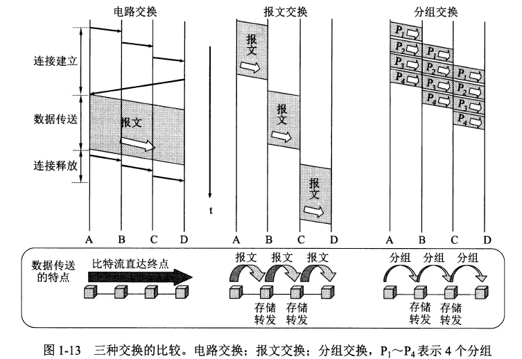
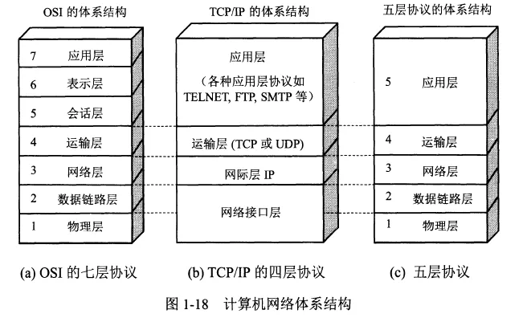
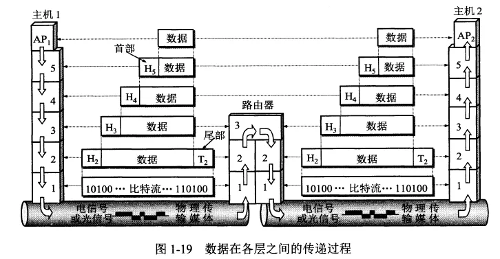
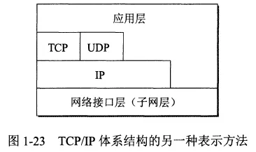
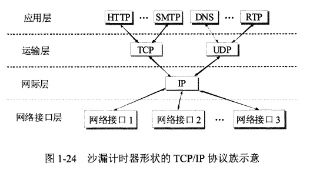

计算机网络概述
- TAGS: Network
计算机网络在信息时代中的作用
常见的网络有三大类：电信网络、有线电视网络、计算机网络。其中计算机网络是核心。
互联网即因特网，是 Internet 的译名（注意不是 internet）
互联网是由数量极大的各种计算机网络互连起来的。
互联网的两个基本特点：连通性、共享
互联网+ 的含义：互联网 + 各个传统行业
互联网概述
网络的网络
计算机网络由 多个结点和连接结点的链路组成 。结点可以是 计算机、集线器、交换机或路由器 等。
网络之间可以通过路由器互连起来构成网络的网络 ，称为互连网。
网络把许多计算机连接在一起，互连网则把许多网络通过路由器连接在一起。与网络相连的计算机称为主机。
互联网基础结构发展的三个阶段
internet 是互连网，通用名词，泛指网络。互连网之间的通信协议可以任意选择，不一定是 TCP/IP
Internet 是互联网，专用名词，特指 全球最大的互连网。互联网采用 TCP/IP 协议族作为通信规则 ，前身是美国的 ARPANET。
第三阶段的互联网
- 现在的互联网是多层次 ISP 结构：分为主干ISP、地区ISP、本地ISP。
- ISP 即互联网服务提供商，中国电信、中国联通、中国移动都是 ISP。
- 上网就是指接入到互联网。主机必须有 IP 地址才能上网。
- ISP 从互联网管理机构申请到很多 IP 地址，同时拥有通信线路及路由器等联网设备。
- 用户向 ISP 交纳费用获得所需 IP 地址的使用权，然后就可以通过该 ISP 接入互联网。
- 互联网由全球无数的 ISP 所共同拥有。
- 万维网（WWW）是基于互联网开发的一种信息共享服务，浏览网址一般使用的就是万维网，而邮件等就没有用到万维网。
互联网的标准化工作
所有的互联网标准都以 RFC 文档的形式发表在互联网上。互联网上有很多 RFC 文档，但只有少部分是互联网标准
互联网的组成
互联网按工作方式划分为边缘部分和核心部分：
- 边缘部分：由连接到互联网的主机组成，作用是进行信息处理。
- 核心部分：由大量网络和连接网络的路由器组成，作用是按存储转发方式进行分组交换，为边缘部分提供通信服务。
互联网的边缘部分
主机又称端系统，个人电脑、摄像头、手机等都属于端系统。
边缘部分利用核心部分提供的服务进行通信，一般称为计算机之间通信。
计算机之间的通信实际上是计算机 A 上某个进程和计算机 B 上另一个进程之间的通信。
通信方式主要有两类：客户-服务器方式、对等方式（P2P）。
互联网的核心部分
核心部分最重要的功能是分组交换，主要组件是路由器。
路由器是实现分组交换的关键构件，用来转发分组。
分组交换
- 要发送的整块数据称为一个报文。将报文分为多个数据段，每个数据段加上一个首部（包头）构成一个分组（包）。
- 分组交换采用存储转发技术。路由器收到分组后，先暂时存储，检查首部，查找转发表，然后按照首部中的目的地址，找到合适的接口转发给下一个路由器，这样一步步交付给最终的目的主机。
- 首部中主要包含着目的地址、源地址等控制信息。
- 分组是在互联网中传送的数据单元。
三种交换方式
- 电路交换：有三个步骤：建立连接（占用通信资源，一条专用的物理通路）、通话（一直占用通信资源）、释放连接（归还通信资源）
- 缺点：在通话的全部时间内始终占用端到端的通信资源。
- 应用：电话使用的就是电路交换。而互联网数据因为其突发性，使用电路交换的话效率很低。
- 报文交换：整个报文先传送到相邻结点，全部存储下来后查找转发表，转发到下一个结点。
- 分组交换：单个分组传送到相邻结点，存储下来后查找转发表，转发到下一个结点。

计算机网络的类别
计算机网络的定义
计算机网络并非专门用来传送数据，还支持很多其他应用。
几种不同类别的计算机网络
- 广域网WAN：互联网的核心部分，连接广域网各结点的一般使高速链路。
- 城域网MAN：很多城域网采用的是以太网技术，常并入局域网进行讨论
- 局域网LAN：一般通过高速通信线路相连，地理范围较小。校园网、企业为一般为局域网
- 个人区域网PAN：范围很小，一般在 10m 左右。
接入网
- 接入网 AN 是用来把用户接入到互联网的网络。
- 接入网既不属于核心部分，也不属于边缘部分，而是位于端系统到互联网中第一个路由器之间的一种网络。
- 宽带接入网就是一种接入网。
计算机网络的性能
计算机网络的性能指标
常用的 7 个性能指标：
- 速率
- 带宽
- 吞吐量
- 时延
- 时延带宽积
- 往返时间
- 利用率
速率
- 速率是计算机网络中最重要的性能指标。
- 速率是数据的传送速率，单位是 bit/s，有时也写为 bps。
- 1G 速率实际上是 1Gbit/s 而不是 1Gbyte/s。提到网络速率时，一般指的是额定速率或标称速率。
带宽
带宽有两种意义：
- 某个信号具有的频带宽度，是一个赫兹范围。表示某信道允许通过的信号频带范围就称为该信道的带宽。是频域称谓
- 计算机网络中，带宽表示网络中某通道传送数据的能力，网络带宽表示单位时间内网络中的某信道所能通过的最高数据率，单位是 bit/s。是时域称谓。
吞吐量
- 吞吐量表示单位时间内通过某个网络的实际的数据量。经常用于对现实世界中的网络的一种测量。
- 吞吐量受网络的带宽或额定速率的限制。
时延
- 时延是数据从网络的一端传送到另一端所需的时间。
- 网络中的时延由以下几个不同的部分组成：
- 发送时延：主机或路由器发送数据帧所需的时间，即从发送数据帧的第一个比特到最后一个比特发送完毕的时间，也叫传输时延。
- 计算公式：发送时延 = 数据帧长度/发送速率。
- 发送速率越快，发送时延越低。
- 传播时延：传播时延是电磁波在信道中传播一定的距离花费的时间。
- 计算公式：传播时延=信道长度 / 电磁波在信道上的传输速率。
- 电磁波在网络中的传输速率比真空中低，在铜线中为 2.3 亿米每秒，在光纤中是 2 亿米每秒。
- 距离越长，传输时延越长。
- 处理时延：主机或路由器在收到分组时要花费时间处理数据，如分析分组的首部，从分组中提取数据部分，差错检验等等。
- 排队时延：分组在经过网络传输时要经过许多路由器，要在路由器中排队等待转发。
- 网络的通信量越大，排队时延越长。
- 发送时延：主机或路由器发送数据帧所需的时间，即从发送数据帧的第一个比特到最后一个比特发送完毕的时间，也叫传输时延。
- 总时延 = 发送时延 + 传播时延 + 处理时延 + 排队时延。
- 高速链路（高带宽链路）相比其他提高的是数据的发送速率，减小发送时延。光纤传输速率高即向光纤信道发送数据的速率高。
时延带宽积
- 时延带宽积 = 传播时延 * 带宽。
- 时延带宽积表示的是一个管道的体积，表示这个链路可容纳的比特，或者说同一时刻正在链路上传送的数据。
- 只有链路中充满了比特时，链路才得到充分的利用。
往返时间
- A 向 B 发数据后需要收到 B 发回的确认信息才会继续发送数据，A 发完数据后等待确认信息的时间就是往返时间（RTT）。
- 有效数据率 = 数据长度 / ( 发送时间 + RTT )。
- 在互联网中，往返时间还包括各中间结点的处理时延、排队时延和转发数据时的发送时延等。
- 使用卫星通信时，往返时间会比较长，是很重要的指标。
利用率
- 利用率有信道利用率和网络利用率两种：
- 信道利用率：信道有百分之多少的时间是被利用的，即有数据通过。
- 网络利用率：全网络的信道利用率的加权平均值。
- 信道利用率并非越大越好，因为根据排队论，当利用率增大时，信道引起的时延也会迅速增加。
- D0 为网络空闲时的时延，则网络当前时延 D 和利用率 U 之间的关系为： D = D0 / (1 - U）。
- 当利用率 U 达到 0.5 时，时延就要加倍。利用率接近 1 时，时延会趋于无穷。
计算机网络的非性能特征
费用、质量、标准化、可靠性、可扩展性和可升级性、易于管理和维护
计算机网络体系结构
计算机的体系结构是分层次的。
计算机网络体系结构的形成
两个计算机之间通信要完的工作：
- 发起通信的计算机必须将数据通信的通路进行激活。
- 告诉网络如何识别接收数据的计算机
- 发起通信的计算机必须查明对方计算机是否已开机，并且与网络连接正常。
- 发起通信的计算机中的应用程序必须清楚，对方计算机中的文件管理程序是否已做好接收文件和存储文件的准备工作。
- 若计算机的文件格式不兼容，至少其中一台计算机可以完成格式转换。
- 如果出现差错或意外事故，应有可靠的措施保证对方计算机最后收到正确的文件。
相互通信的计算机系统必须高度协调工作才可以完成通信。
OSI 的七层协议的体系结构是法律上的国际标准。
应用最广泛的、事实上的国际标准是 TCP/IP。互联网即采用的 TCP/IP。
协议与划分层次
网络协议（简称协议）是为进行网络中的数据交换而建立的规则、标准或约定。
网络协议规定了网络中交换的数据的格式和有关的同步问题。
协议主要由三个要素组成：
- 语法：数据与控制信息的结构或格式
- 语义：需要发出何种控制信息，完成何种动作以及做出何种响应
- 同步：时间实现顺序的详细说明
网络协议是分层的，分层的好处：
- 各层之间互相独立。某一层并不知道另一层是如何实现的，只知道接口。
- 灵活性好。只要接口不变，一层发生变化不影响另一层。
- 结构上可分割开。
- 易于实现和维护。
- 能促进标准化工作。
各层需要完成的工作包括一下的一种或多种：
- 差错控制。使通信更加可靠。
- 流量控制。发送端的发送速率必须使接收端来得及接受，不能太快。
- 分段和重装。发送端将数据分块，接收端还原。
- 复用和分用。发送端几个高层会话复用一条低层的连接，在接收端再进行分用。
- 连接建立和释放。交换数据前先建立一条逻辑连接，数据传送结束后再释放。
计算机网络的各层及其协议的集合就是网络的体系结构。
具有五层协议的体系结构
TCP/IP 是个四层的体系结构，包含应用层、运输层、网际层和网络接口层。实质上 TCP/IP 只有上三层，最下面的网络接口层没什么内容。

这里以五层协议为例来学习，五层协议中的物理层和数据链路层对于 TCP/IP 中的网络接口层。
应用层
- 任务：通过应用进程间的交互来完成特定网络应用。
- 应用层协议定义的是应用进程间通信和交互的规则。进程即主机中正在运行的程序。
- 互联网中的应用层协议有域名系统 DNS，支持万维网应用的 HTTP 协议，支持电子邮件的 SMTP 协议等。
- 应用层交互的数据单元称为报文。
运输层
- 任务：负责向两台主机中进程之间的通信提供通用的数据传输服务。应用层利用该服务传输应用层报文。
- 运输层有复用和分用的功能。因为一台主机有多个进程，复用就是多个应用层进程可同时使用下面运输层的功能。
- 运输层主要使用两种协议：
- 传输控制协议 TCP：提供面向连接的、可靠的数据传输服务。数据传输的单位是报文段。
- 用户数据报协议 UDP：提供无连接的、尽最大努力的数据传输服务，不保证数据传输的可靠性。数据传输的单位是用户数据报。
网络层
- 任务：为分组交换网上的不同主机提供通信服务；选择合适的路由。
- 发送数据时，网络层把运输层产生的报文段或用户数据报封装成分组或包进行传送。
- TCP/IP 体系中，网络层使用 IP 协议，因此分组也叫 IP 数据报，或简称数据报，但注意这与用户数据报不同。
- 互联网使用无连接的网际协议 IP。
- 无论哪一层的数据单元，都可以笼统地用“分组”来表示。
数据链路层
- 任务：将网络层交下来的 IP 数据报组装成帧，在两个相邻结点的链路上传送帧。
- 每一帧包括数据和必要的控制信息（包括同步信息、地址信息、差错控制等）。
物理层
物理层传输的单位是比特。

上图中为主机1的 AP1 进程向主机2 的 AP2 进程间传送数据的过程。
第5层、第4层、第3层分别为数据加上了属于本层的控制信息，都位于首部。第2层的控制信息分为两部分加到了首部和尾部。
对等层次间的数据单位称为该层的协议数据单元。
在路由器中，分组上升到第3层，过程中每一层都根据控制信息进行必要的操作并将该控制信息剥去。在第三层根据首部中的目的地址查找路由器中的转发表，找出转发分组的接口，然后依次加上新的控制信息下降到第1层，将数据发送出去。
理解：上图可以发现网际层的控制信息用于整个网络，而链路层的控制信息仅用于两个节点之间。路由器只到第3层。
实体、协议、服务和服务访问点
实体表示可发送或可接收信息的硬件或软件进程。
协议是控制两个对等实体间进行通信的规则的集合。
在协议的控制下，两个对等实体间的通信使得本层能够向上一层提供服务。要实现本层协议，也需要下一层提供的服务。
上层使用下层提供的服务必须通过与下层交换一些命令，即服务原语。
同一系统中相邻两层的实体交互的地方称为服务访问点，实际上就是一个逻辑接口。
协议必须把所有不利的条件都事先估计到，确保能应对所有异常情况。
TCP/IP的体系结构
技术的发展不严格遵循分层概念，事实上现在某些应用程序可以直接使用 IP 层甚至网络接口层，如下图。

TCP/IP 协议族中的多种协议如下所示：

其他
OSI 参考模型对网络排错指导
- 物理层故障
- 查看连接状态、发送和接收的数据包
- 数据链接层故障
- MAC 冲突、ADSL 欠费、网速没办法协商一致、计算机连接到错误的 vlan
- 网络层故障
- 配置了错误的 IP 地址、子网掩码、错误的网状；路由器上没有配置到达网络的路由
- 传输层故障
- 应用层故障
- 应用程序配置错误（浏览器配置一个不存在的代理）
OSI 参考模型和网络安全
- 物理层：交换机不用的口 down 掉
- 数据链路层：ADSL 账号密码、划分 VLAN、交换机端口绑定 MAC 地址
- 网络层：在路由器上使用 ACL 控制数据包流量、防火墙
- 应用层：开发的应用程序无漏洞